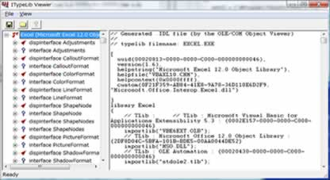
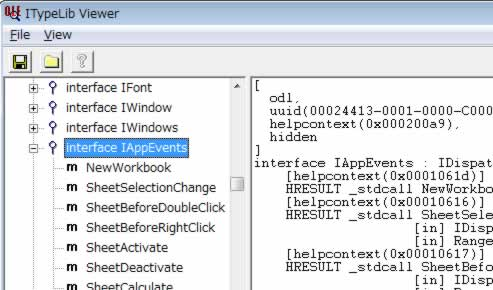
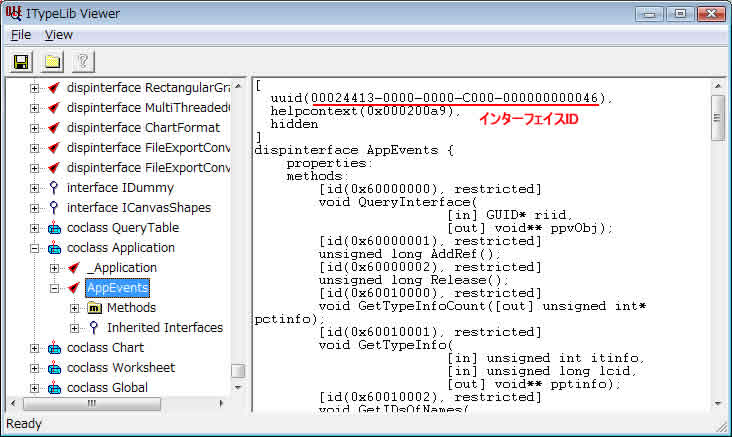
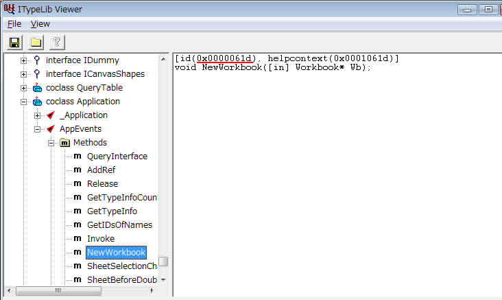

EXCELのIAppEventsをラップするクラスを作成する例
Visual SutdioツールのOLE Viewer(OleView.Exe)を起動する
VS8のOLEViewerのパス:C:\Program Files\Microsoft Visual Studio 8\Common7\Tools\Bin\OleView.Exe
イベントインターフェイスを含むタイプライブラリを選択し、ITypeLibViewerを起動する
トップ項目[Type Libraies ]から[Microsoft Excel XX.X Object Library ...]を ダブルクリックし、ITypeLib Viewerを起動する
目的のイベントインターフェイスを探す。
※インターフェイスの内容をクリップボードにコピーし、エディタに貼り付けたほうが探しやすいかも

ヘッダファイルを作成し、インターフェイスIDを定義する
インターフェイスIIDの定義部分
ExcelEvent.h
const IID IID_ExcelAppEvents = {0x00024413,0x0000,0x0000,{0xc0,0x00,0x00,0x00,0x00,0x00,0x00,0x46}};ヘッダファイルにイベントIDを定義する
ExcelEvent.h
const IID IID_ExcelAppEvents = {0x00024413,0x0000,0x0000,{0xc0,0x00,0x00,0x00,0x00,0x00,0x00,0x46}};
enum DISPID_EXCELAPP_EVENTS{
DISPID_NEWWORKBOOK = 0x0000061d
DISP_ID_SHEETSELECTIONCHANGE = 0x00000616
};
IDispatchクラスから派生したイベントクラスを作成する
イベントクラスには、以下の関数を必ずオーバーライドする
| CEventDispatch.h | イベント共通基本クラスヘッダ |
| CEventDispatch.cpp | イベント共通基本クラスソース |
| ExcelEvent.h | EXCELイベントクラスヘッダ |
| ExcelEvent.cpp | EXCELイベントクラスソース |
イベントに接続する
IConnectionPointContainerをクエリし、IConnectionPointContainerインターフェイスを取得するIConnectionPointContainerインターフェイスのFindConnectionPointを呼び出し、コネクションポイントを取得する
参照:CEventDispatch.cppのAdvise関数
DWORD mCookie;
IConnectionPoint* mConnectPoinst = NULL;
.
.
.
bool ExcelEventAdvise( IDispatch* IAppExcel,CExcelEvents* pExcelEvents )
{
// 1.コネクションポイントコンテナをクエリ
IConnectionPointContainer *pConnPtContainer;
if(!SUCCEEDE(IAppExcelts->QueryInterface( IID_IConnectionPointContainer,(void **)&pConnPtContainer )))
return ( false );
bool bSuccess = false;
// 2.コネクションポイントの取得
if(SUCCEEDED(pConnPtContainer->FindConnectionPoint(m_guidEvents,&mConnectPoinst ))){
pExcelEvents->AddRef();
// 3. イベントに接続
if(SUCCEEDED(mConnectPoint->Advise( pExcelEvents,mCookie );
bSuccess = true;
}
pConnPtContainer->Release();
.
.
.
return ( bSuccess );
}
イベントの接続解除する
IConnectionPointのUnadviseを呼び出し、接続解除する
void ExcelEventUnadvise()
{
if( mConnectPoint ){
mConnectPoint->Unadvise( mCookie );
mCookie = 0;
mConnectPoint->Release();
mConnectPoint = NULL;
}
}